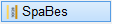
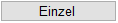
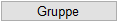

")
")
Mit dieser Funktion können Sie Informationen aus der Verlegung als Text in die Zeichnung übertragen.
|
Hinweis: |
|
Wenn Sie Sparrengruppen ändern oder löschen, werden auch die Beschriftungen gelöscht. Sie müssen die Beschriftungen nachträglich wieder hinzufügen. Sollen nur die Beschriftungen gelöscht werden, können Sie [SpBsLö] oder [Text | lösche] und [Linie | lösche] oder [FenÄnd | lösche] benutzen. |

Optionen
 |
Beschriften eines einzelnen Sparrens. |
 |
Beschriften einer Sparrengruppe. |
So wird's gemacht:
§Wählen Sie, ob die Länge der Sparren einzeln oder als Gruppe geändert werden soll. [Welche(r) Sparren].
§Klicken Sie eine Linie eines Sparrens an.
Wenn Sie eine Sparrengruppe beschriften, wird ein Pfeil vom ersten bis zum letzten Sparren gezeichnet. Verschieben Sie den Pfeil an eine geeignete Stelle und legen Sie diesen mit Linksklick ab.
§Geben Sie einen neuen Text ein oder übernehmen Sie einen vorhandenen Text mit Rechtsklick. [Text].
ISBCAD schlägt eine Bezeichnung vor, z. B. Sparren 10/24 a=85cm. Die Querschnitts- und Abstandsangabe wird aus der Verlegung übernommen.
Alternativ: Wenn Sie auf eine Beschriftung in der Zeichnung klicken, wird diese in die Eingabe übernommen. Nutzen Sie ggf. die Sonderzeichen-Funktion.
§Geben Sie den Textwinkel ein und bestätigen Sie Ihre Eingabe. [Textwinkel].

|
||||||


§Legen Sie den Text mit Linksklick ab. [Textlage].
Der Text wird platziert.
Um die Sparrenbeschriftung zu konfigurieren
§Klicken Sie im Funktionsbereich auf die Schaltfläche Einstellung.
Der Dialog Holzbau-Einstellungen wird geöffnet.
§Ändern Sie im Dialog auf der Registerkarte Sparrenbeschriftung die entsprechenden Eigenschaften.
Registerkarte Sparrenbeschriftung Darstellung Beschriftung Text-Font, Textgröße, Breitenfaktor, Stiftnr. Wählen Sie die Schriftart und die übrigen Textparameter aus. Bezeichnung Verlegung Hier wird "Sparren" vorgeschlagen. Sie können einen beliebigen anderen Text als Standard eintippen. Fügen Sie nach dem Text ein Leerzeichen hinzu, um den Text von der Querschnitts- und Abstandsangabe bei der Sparrenbeschriftung zu trennen. Bezeichnung Abstand Hier wird "a =" vorgeschlagen. Wenn Sie eine andere Bezeichnung festlegen möchten, geben Sie diese im Eingabefeld ein. Darstellung Richtungspfeil Stiftnr., Linientyp Wählen Sie die Stiftnummer und den Linientyp für den Richtungspfeil. mit Pfeilspitzen Wenn Sie am Anfang und am Ende eine Pfeilspitze darstellen möchten, setzen Sie einen Haken in die Checkbox. Darstellung Pfeilspitzen Stiftnr., Linientyp Geben Sie für die Darstellung der Pfeilspitzen Stiftnummer und Linientyp an. Länge / Höhe [cm] Die Größe der Pfeilspitze wird absolut in Zentimeter unabhängig vom Maßstab vorgegeben. |
Zugehörige Referenzen: